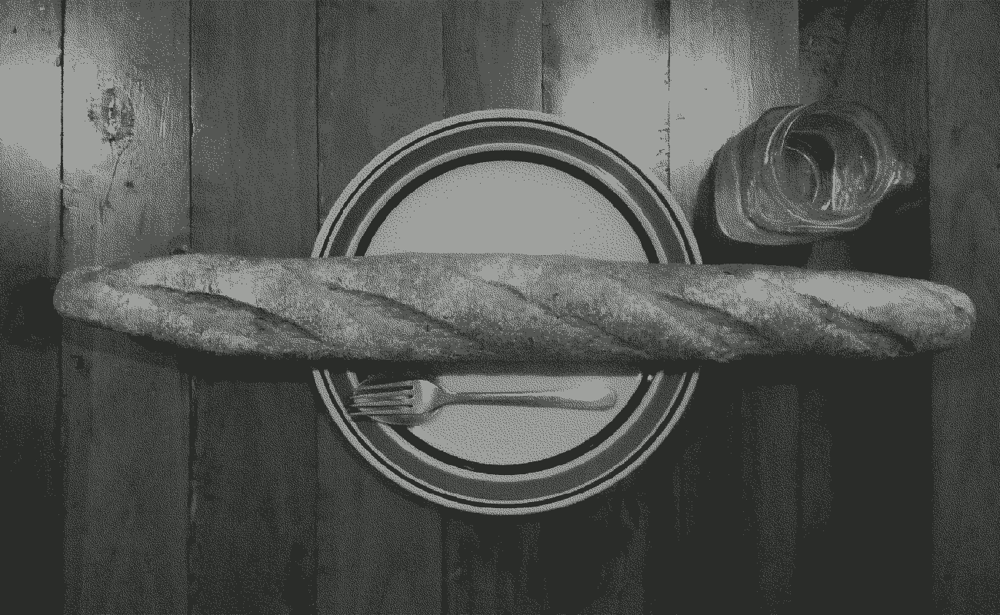

Health

Guidelines
Adhere to a plant-based diet
Avoid foods with more than 10 ingredients
Consume food as close as possible to its natural form
Avoid sugar and artificial ingredients
Eat until you're ~80% full